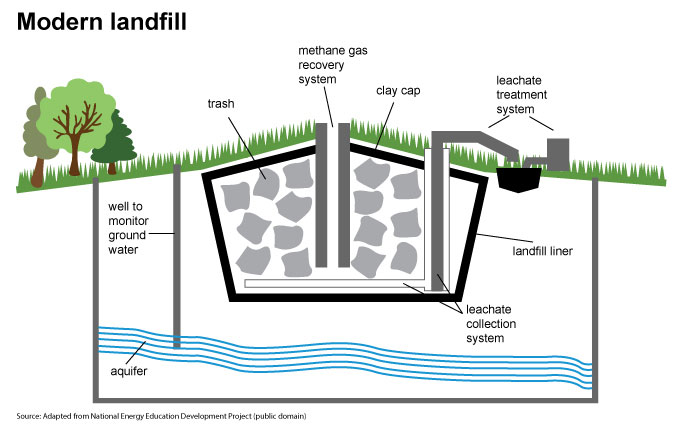
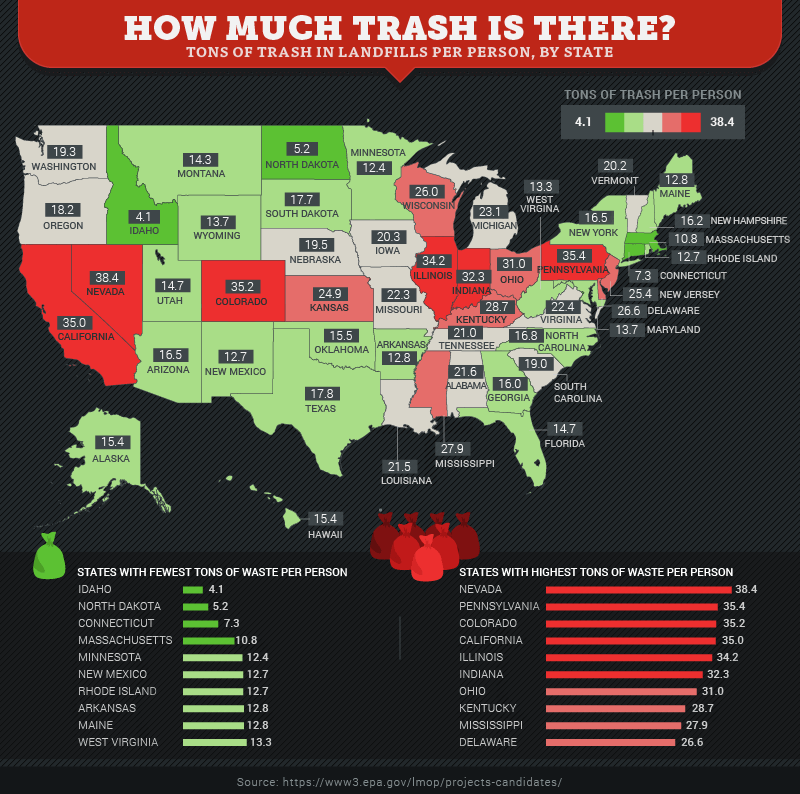

In the United States, we throw away 2.5 million plastic bottles every hour - about 42,000 per minute, or about 695 per second.
44% of trash in a lanfill is food materials. Methane is created when microorganisms break down (or biodegrade) the
organic matter that is contained in landfills. Methane gas often smells bad and can cause some respiratory problems for humans. In addition 12% is plastic
and that can take hundreds of years to break down.
Landfill liners have several layers: first, a layer of soil as a foundation for the waste; then, a geotextile layer that lets water
through but filters out any little pieces of trash; then, a leachate collection system, which consists of gravel that allows water to filter down to pipes
where it is collected; under the leachate collection system, liners are required to have a plastic layer in order to prevent leachate from reaching the
groundwater; and finally, liners have an impermeable clay layer to stop any water that may make it through the plastic.


All this trash has to go somewhere. It goes to landfills all over the U.S. where leaching occurs. Leaching is the process of water (usually in the form of precipitation, such as rain) filtering through a landfill, which then carries whatever contaminants
that are in the landfill out with the ground or surface water. After water has filtered through a landfill, it is called leachate. Leachate commonly contains
high concentrations of chemicals, heavy metals and microbial life. Chemicals come from many different industrial wastes that are dumped at landfills or
agricultural waste that contains large amounts of pesticides.